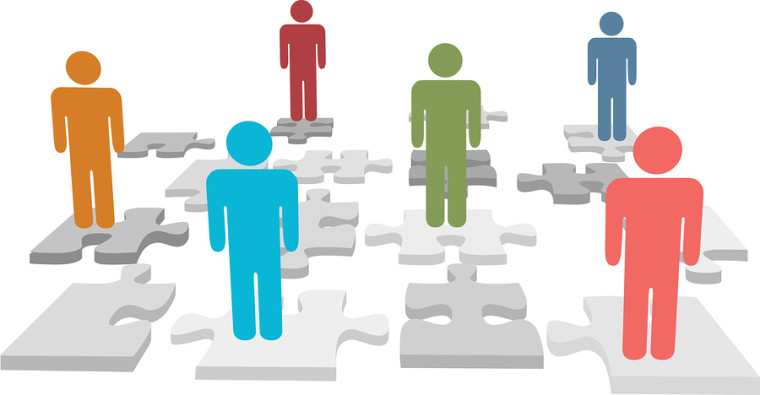

我一直在IT圈子里混，所以就拿程序员经常会碰到的情况举例，干这行的，经常会碰到软件开发的延期问题。每当项目进度 delay的时候，如果问相关的当事人为啥会 delay，大多会得到如下的回答：
搞需求的家伙太土鳖了，需求一直都没整明白，老是变来变去的！
搞设计的家伙太傻B了，这种设计根本没法实现嘛！
团队里的其他人太弱了，我被这帮菜鸟拖了后腿！
某某工具/某某语言/某某数据库/某某操作系统太难用了，耽误了不少时间！
测试那帮家伙太没用了，好几个Bug到快发布了才发现，我哪来得及改啊！
（还可以列出很多）

从上面这些抱怨，不知大伙儿是否看出一个共同点：都把问题的原因定位在（所依赖的）外部环境中。我观察了好几年，很少听到哪个开发人员会主动承认 delay 是因为其自身的原因。
除了开发延期，类似的例子还有好多，随手都能举出来：
比如，每当我问某个开发人员，为什么这几年技术没长进，经常听到的回答是「太忙，没有时间学习」。
比如，解放战争片的那句经典台词：「不是我们无能，实在是共军太狡猾」。
比如，项羽临死前的那句：「此天之亡我，非战之罪也」。
为啥在出问题时，人们总是怪罪外部环境因素捏？我分析了一下，大致有以下几种可能。
和心理上的感受有关。如果归罪于自己，会产生一种负疚感，心情肯定会不太爽；而归罪于外部因素，则可以逃避这种负疚感，自我感觉会好一些。
和幼年时期的教育有关。比如经常会看到这样一个场景。一个学步的小孩，如果不慎撞到了椅子并号啕大哭，他/她的父母经常会一边装作打着椅子，一边哄小孩：「宝宝不哭，是椅子不好，我打它」。如果在童年经常受到这种潜移默化的影响，长大之后，容易有「归因于外」的倾向。
那么，「归因于外」和「归因于内」，哪一种更呢？要回答这个问题，先得来说一下心理学的「归因理论」。
归因理论，洋文叫「Attribution Theory」。通俗地说，就是当人们碰到成功或失败的时候，总是会企图去寻求一个原因，以此来解释成功/失败的根源。 通常，人们会找到如下一些原因：自己的能力、自己的努力程度、事情的难易程度、运气的好坏、其他人的帮助/妨碍、其它事情的帮助/妨碍。 对于上述的每一个原因，又分别包含三种属性：来源、稳定性（也叫易变性）、可控性。下面大致解释一下。
来源分为外因和内因。「能力」和「努力程度」属于内因，其它属外因。
稳定性表示这些因素是否会随着时间而变化。
可控性表示这些因素是否能被自我所控制、影响。
至于哪些因素是稳定和可控的，哪些是不稳定/不可控的，就取决于每个人的心智模式了。比如大部分人会把「能力」看成是稳定的；把「努力程度」看成是可控的；把「运气」看成是不可控的。

前面啰嗦了一大堆，现在要进入正题了。先来批判几种我觉得不合适的归因方式。
失败时，归因于外部（运气、其他人、其它事），且认为外因是不可控的。这种心态很普遍。当你具有这种心态时，不会反省自身的不足。每次失败后都是怨天尤人。因此，即使经历很多次失败，你的能力也始终得不到改进。
失败时，归因于能力，且认为能力是稳定的。通常，比较自卑的人容易有这种心态。虽然在每次失败后，都归因于自己能力不足，但由于这种心态把自己的能力看成是稳定的（不可改变的），所以就容易导致破罐子破摔。心想，反正我不行，再努力也没用，不如随便应付了事。心理学上称为「习得性无助」。
成功时，归因于能力。比较自信的人，容易有这种心态。每次成功了，都觉得自己特牛。从来不思考自己的成功是否得益于客观条件，是否得益于别人的帮助。结果捏，容易骄傲、盲目自大。而且这种人，也不太注重自身能力的提升。
无论成败，皆归因于外部因素，且认为外部因素不可控。具有这种心态的人，会认为自己对环境完全没有办法掌控，只能随波逐流。长此以往，人会变得消极，凡事都无所谓。
说完了坏的归因方式，最后来说一下，我认为比较好的归因方式。
失败时，归因于能力，且认为能力是不稳定的、可控的。前面说了，失败时归因于自己会产生一种负疚感。由于这种心态认为能力是不稳定的（可变的），可控的，因此在负疚感的刺激下，会产生提高自身能力的动机。所以，这种人就会通过失败来获得能力的提高（俗话说，失败是成功之母，指的其实就是这类人之母）。
成功时，归因于努力，且认为努力是不稳定的、可控的。如果你具有这种心态，当你成功时，归因于自身的努力，会在内心产生自豪感。下次再做类似的事情，由于有之前成功的记忆，会刺激自己更加努力地完成任务。当你付出的努力更多，则成功的概率会加大，长此以往，就形成了一种良性循环。
归因会对个体以后的成就和行为产生影响。不同的归因倾向会导致不同的情感体验和情感反应，并由此影响个体对未来结果的预期和努力。所以，咱们要有意识地调整自己看待成败的观点，以利于个人（在心智层面）更好地成长。